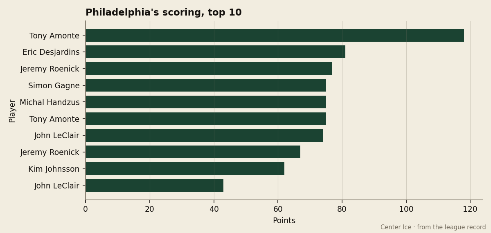

Philadelphia pays $69.34M for 52 points, and its club-mates in the Atlantic Division produce nearly half that cost per point
The Flyers' $1.33M per point is the worst rate in hockey. New Jersey, in the same division, pays $0.64M
 Howard BlaineSenior writer, The Blaine Rankings · The Hockey Gazette
Howard BlaineSenior writer, The Blaine Rankings · The Hockey Gazette
 Philadelphia Flyers has the fourth-highest payroll in this league at $69.34M and the 11th-highest point total at 52. The arithmetic, which the Bureau's Contract Ledger prints directly, comes to $1.33M per point, the worst rate across all 30 clubs. The team directly above them in the divisional table, the
Philadelphia Flyers has the fourth-highest payroll in this league at $69.34M and the 11th-highest point total at 52. The arithmetic, which the Bureau's Contract Ledger prints directly, comes to $1.33M per point, the worst rate across all 30 clubs. The team directly above them in the divisional table, the  New Jersey Devils, spends $44.98M and has 70 points, a rate of $0.64M — less than half what the Flyers pay for a single standings point in the same division, the same conference.
New Jersey Devils, spends $44.98M and has 70 points, a rate of $0.64M — less than half what the Flyers pay for a single standings point in the same division, the same conference.

The chart above traces Philadelphia Flyers's top scorers from last season.  Tony Amonte85 scored 118 points in 82 games and won the Masterton. Eric Desjardins, a defenceman, scored 81. Jeremy Roenick had 77 in 63 games. Simon Gagne and Michal Handzus each produced 75. This season, the Flyers' top 30 does not include any of those names on the league's scoring leaderboard, which is cut at 75 points. Amonte himself has not reached that mark. The team that carried four players to 75 points or more last year has not produced a single man the Bureau's Book places among the 30 highest scorers in the league.
Tony Amonte85 scored 118 points in 82 games and won the Masterton. Eric Desjardins, a defenceman, scored 81. Jeremy Roenick had 77 in 63 games. Simon Gagne and Michal Handzus each produced 75. This season, the Flyers' top 30 does not include any of those names on the league's scoring leaderboard, which is cut at 75 points. Amonte himself has not reached that mark. The team that carried four players to 75 points or more last year has not produced a single man the Bureau's Book places among the 30 highest scorers in the league.
That is not the same thing as saying the roster is empty. Amonte is still producing: his 75 points in 52 games this season pace 118 over a full schedule, identical to last year's total. Roenick's 67 in 52 is a 106-point pace. The question is what sits below them, and what it costs to field them.
A payroll gap that produces fewer wins
New Jersey Devils has played 52 games, 25 wins, 15 losses, 4 overtime losses, 70 points, 175 goals scored and 160 allowed. Philadelphia Flyers has played 52 games, 18 wins, 23 losses, 6 overtime losses, 52 points, 185 goals scored and 199 allowed. The Flyers outscore the Devils in goals for and trail them by 18 points. The difference lives not in offense, but in the space between the blue lines.
 Jeff Hackett84 is the Flyers' starting goaltender. He is 20 and 21 with a 3.34 goals-against average and a .853 save percentage. His overall grade in the Book is 83. Across the river in Newark,
Jeff Hackett84 is the Flyers' starting goaltender. He is 20 and 21 with a 3.34 goals-against average and a .853 save percentage. His overall grade in the Book is 83. Across the river in Newark,  Martin Brodeur91 has a 30 and 13 record, a 2.67 goals-against average, a .875 save percentage, and a grade of 94. Brodeur earns part of that $44.98M payroll. Hackett is the difference between the two teams in 20 points.
Martin Brodeur91 has a 30 and 13 record, a 2.67 goals-against average, a .875 save percentage, and a grade of 94. Brodeur earns part of that $44.98M payroll. Hackett is the difference between the two teams in 20 points.

The Flyers are 15 and 10 at home and 8 and 19 on the road. That road record is among the worst in the Eastern conference, comparable only to  Florida Panthers's 10 and 16 and
Florida Panthers's 10 and 16 and  Montreal Canadiens's 7 and 20. A team that cannot win outside its own building cannot close the gap between its payroll and its standings, and the $69.34M in salary demands wins that 18 regulation victories over 52 games do not provide.
Montreal Canadiens's 7 and 20. A team that cannot win outside its own building cannot close the gap between its payroll and its standings, and the $69.34M in salary demands wins that 18 regulation victories over 52 games do not provide.
The divisional schedule makes it harder. In 11 games against the  Atlanta Thrashers,
Atlanta Thrashers,  New York Rangers,
New York Rangers,  New York Islanders and
New York Islanders and  Pittsburgh Penguins this season, Philadelphia Flyers has gone 2 wins, 1 overtime win, 6 losses, 2 overtime losses, with 35 goals scored against 43 allowed. They are 0 and 2 with an overtime loss against New Jersey Devils, 1 and 3 with an overtime loss against New York Islanders, 0 and 1 with an overtime loss against New York Rangers, and 1 and 0 against Pittsburgh Penguins. Only the Penguins, themselves at 16 and 24 and in the same four-point bubble this desk examined today, are winnable. Against the three clubs ahead of them in the Atlantic, the Flyers have one regulation win in 11 games.
Pittsburgh Penguins this season, Philadelphia Flyers has gone 2 wins, 1 overtime win, 6 losses, 2 overtime losses, with 35 goals scored against 43 allowed. They are 0 and 2 with an overtime loss against New Jersey Devils, 1 and 3 with an overtime loss against New York Islanders, 0 and 1 with an overtime loss against New York Rangers, and 1 and 0 against Pittsburgh Penguins. Only the Penguins, themselves at 16 and 24 and in the same four-point bubble this desk examined today, are winnable. Against the three clubs ahead of them in the Atlantic, the Flyers have one regulation win in 11 games.
What the revenue says about patience
The one number in this ledger that does not condemn Philadelphia Flyers is the gate. The Flyers draw 14,582 per game at $78 a ticket, which produces $57.46M in revenue. Against a $69.34M payroll, that yields $6.08M in profit. The organization is not hemorrhaging money, and it is not spending recklessly relative to what it earns. The ticket price is mid-pack, the prestige is 339 points with zero Cups, and the previous playoff run was a first-round exit.
But $6.08M in profit is the 13th in this league, and it exists because the revenue floor is high in Philadelphia, not because the hockey is good. The same revenue, spent at the rate New Jersey Devils spends it, would produce a different standing. New Jersey Devils takes in $71.87M against a $44.98M payroll and pockets $35.60M. The Flyers cannot match that because the roster they built costs far more and produces 18 fewer points.
The calendar says what the desk believes is the trade deadline falls 40 days from today. Philadelphia Flyers is 11th in the East, 4 points out of the bubble, with 30 games remaining. A club that pays $1.33M per point has 40 days to decide whether it is buying or selling. The 8 and 19 record on the road suggests the answer, and the last time this desk saw a club carry a $69.34M payroll into February and then retool, the roster below the top line was already too expensive to move. The Masterton trophy sits in a building where the record is 18 and 23.